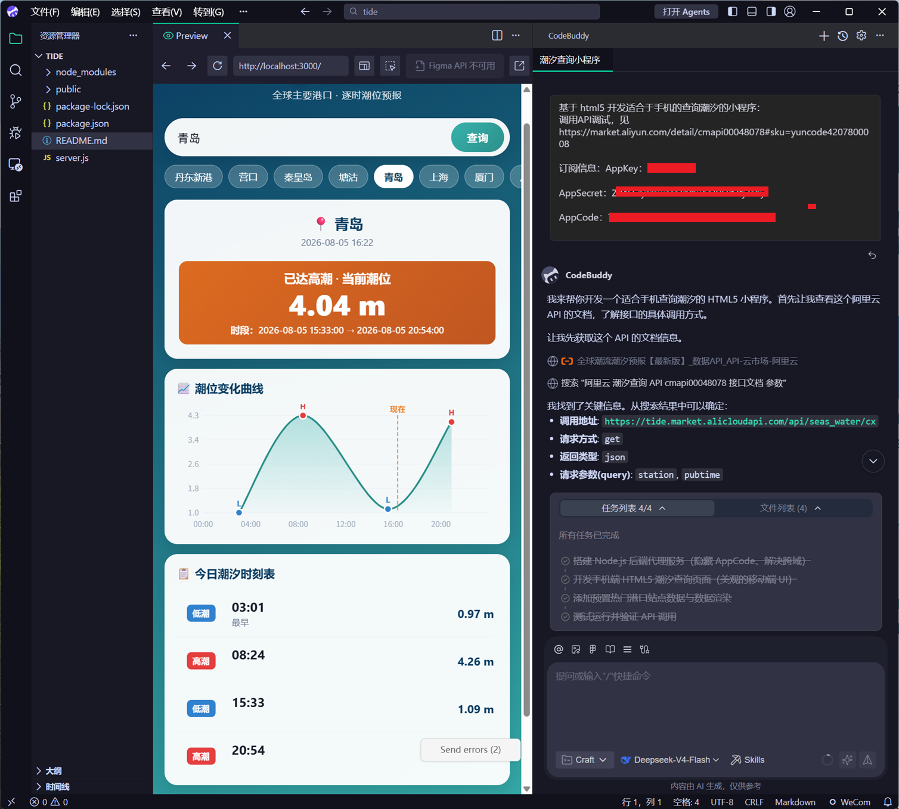

上一期结尾，我们记下了一个经过验证的问题。现在，到了最让人兴奋，也最容易翻车的时刻——动手做。
先做个小测试。假设你的问题是"月底不知道钱花哪了"，现在让 AI 帮你做一个记账小程序。你会怎么描述需求？
A 版本："帮我做个记账小程序，能记录收入支出、按分类统计、做预算提醒、导出报表、支持多人家庭共享、最好还能对接银行卡自动导入账单……"
B 版本："帮我做个记账小程序，先只做两个功能：记一笔账、按月看花了多少。"
如果你选了 A——恭喜你，你踩中了新手第一杀手：想一步到位。而这一篇要教你的，就是 B 版本的思维方式：MVP。
MVP（Minimum Viable Product）＝ 最小可行产品——用最小的成本，做出一个能解决核心问题、能给人用的版本。
注意关键词不是"最小"，是可行：它能真正解决那个最痛的问题，哪怕界面难看、功能很少。
为什么从 60 分开始？三个理由：
新手做 AI 产品，最容易死在一个词上：范围蔓延（Scope Creep）——需求在做的过程中不断膨胀。
它的典型台词是：
问题就在这：让 AI 加功能太容易了，一句话的事。于是今天加一个、明天加一个，两周后你发现：说好的小程序变成了大平台，改不完的 bug，遥遥无期。
更要命的是，功能是连锁反应：加一个功能，就要多一组测试、多一堆报错、多好几轮验收。每个"顺便"，都是往项目里埋一颗定时炸弹。
有人专门给这个坑做了个"检测器"——AI 编程方法论工具 Vibe Tutor 里内置了范围蔓延检测：只要你输入"顺便加个""反正"这类词，它就自动弹窗提醒你回到 MVP 原则。连 AI 都知道要拦着你，可见这坑有多深。
回到上一期记下的问题，用三步把它切成"这一版只做这些"：
第 1 步：圈出"最痛的那一个"
如果这个工具只能解决一个问题，你解决哪个？不是"最有面子"的，而是"最让人抓狂"的。记账小程序里，"记一笔 + 看花了多少"比"漂亮的预算图表"痛一百倍。
第 2 步：列出"必须有"清单（控制在 1-3 个）
用大白话写下来，每个功能一句话，能被你自己验收。比如：
| 项目 | 必须有（MVP 版） | 以后再说（完整版） |
|---|---|---|
| 记账小程序 | 记一笔支出；按月看总花费和分类 | 预算提醒、导出报表、多账号、账单自动导入 |
| 学习打卡 | 每天打卡 + 连续天数 | 排行榜、打卡提醒、好友对战 |
| 库存预警（老刘的） | 入库、出库、缺货邮件提醒 | 多仓库、权限系统、报表 |
第 3 步：写下"不做清单"，贴在旁边
把"以后再说"那栏抄下来，做成一张不做清单。这不是丢功能，是把它们从脑子里清出去，防止做的时候手痒。写下来的承诺，比脑子的承诺管用。
三步走完，你会得到一页纸：问题一句话 + 必须有 1-3 个功能 + 不做清单。这就是你的 MVP 定义，也是给 AI 的需求底稿。
很多人的需求翻车，不是因为没说清楚，而是因为没说"这版做到什么程度"。同样一个问题，两个说法，AI 的产出天差地别：
短短几句"先做 MVP 版 + 其他先不做"，AI 就知道边界在哪，不会自作主张给你堆功能。这一招，比任何提示词技巧都管用。
案例：我的潮汐小程序——10 多分钟做出 MVP（作者亲测）
还记得第 1 篇开头那个潮汐查询小程序吗？那是报道里一位设计师花一周做的。顺着同样的需求，我亲自做了一遍，看看 MVP 到底能有多快——从打开 CodeBuddy 到界面跑起来，10 多分钟。
做法很简单，三步：

CodeBuddy 生成代码、接好接口，浏览器里直接打开——一个能用的潮汐小程序就跑起来了。
界面真的很整洁，也漂亮。功能全吗？当然不。但它已经能用了——这比"想做一个完美的潮汐 App"停在脑子里强一百倍。后面想加"潮汐曲线图""赶海最佳时间提醒"，随时再说。
这个案例验证了三件事：① MVP 只需要核心功能——"查潮汐"一个就够；② 工具选对，效率惊人——国内工具 + 国内模型，10 分钟出活；③ 先跑起来，再优化。
先解决一个核心问题，用起来，再长大——这就是 MVP 的全部秘密。
坑 1：完美主义陷阱——"等界面好看一点再给别人看""等把 bug 都修完再上线"。这个"等"永远等不到头。60 分就拿出来，难看也拿出来——反馈比完美值钱。
坑 2：功能堆砌——"顺便加个"。每想加一个功能，先问一句："没有它，核心问题就解决不了吗？"不是，就写进不做清单。
坑 3：把"最小"当成"随便"——MVP 是功能少，不是质量差。仅有的几个核心功能，要做到能用、稳定、不报错。核心功能敷衍了，验证出来的结果也是假的。
60 分的产品有人用，100 分的产品没人用——先让它跑起来。
AI 时代做产品的门槛已经低到"一句话"，但选择做什么、不做什么的门槛反而更高了。克制，是新手最稀缺的能力。
下一期：《技术栈别纠结：非程序员怎么做技术决策》——功能定了，该用什么"材料"把它搭出来？网页、小程序、App 到底怎么选？一行代码不会，也能选对。